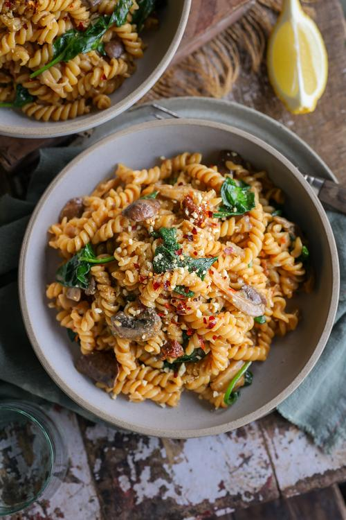

Home
Creamy one-pot Mushroompasta

Description
A easy one-pot creamy mushroompasta. Packed with protein and fibres
Ideal for those busy workdays and when in need of a pick-me-up
This recipe feeds 4, enjoy the rich creamy umami flavours of this dish
Ingredients
- 2 tsp vegetable oil
- 2 medium shallots, chopped
- 6 garlic cloves,minced
- 1 red hot chili pepper,minced
- 2 vegetable bouillon cubes
- 2 cups boilling water
- 12/3cups canned full-fat coconut milk
- 4.9 oz button mushrooms,sliced
- 9.5 oz oyster mushrooms, sliced
- 14 oz dry fusilli
- 1/4cup sundies tomatoes in oil, drained,chopped
- 2tbsp nutritional yeast flakes
- 1 tbsp sodium-reduces soy sauce
- 1 tsp paprika powder
- 1 pinch ground black pepper, plus more to taste
- 1 pinch salt, plus more to taste
- 4 cups fresh spinach
Steps
- Add the oil to a large pot on high heat. when hot, add the shallots, garlic, and chili, and saute until lightly golden, about 3 minutes.
- Add all the remaining igredients to the pot, except for the spinach, and brint to a boil, then deruce to a simmer. Cook for 12-15 minutes, partially covered, stirring occasionally to prevent burning.
- when the pasta is al dente, remove from the heat and add the spinach. Stir until the spinach is wilted.
- Squeeze over some lemon juice and sprinkle on thinly sliced basil leaves if desired. enjoy!